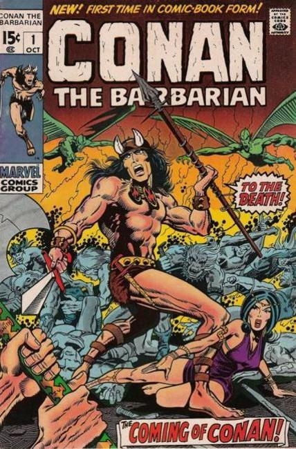

Conan the Barbarian

Creator:
Series:
Publisher: Marvel
Issues:
Other Marvel Conan titles:
Conan Classic #1–11 (June 1994–April 1995) Marvel
Conan Saga #1–97 (May 1987–April 1995) Marvel
Conan the Adventurer #1–14 (June 1994–July 1995) Marvel
Conan the Barbarian Movie Special #1–2 (1982) Marvel
Conan the Destroyer #1–2 (January–March 1985) Marvel
Conan the King #20–55 (January 1984–November 1989) Marvel
Conan the Savage #1–10 (August 1995–May 1996) Marvel
Conan Volume 1 #1–11 (August 1995–June 1996) Marvel
Conan vs. Rune #1 (November 1995 one shot) Marvel